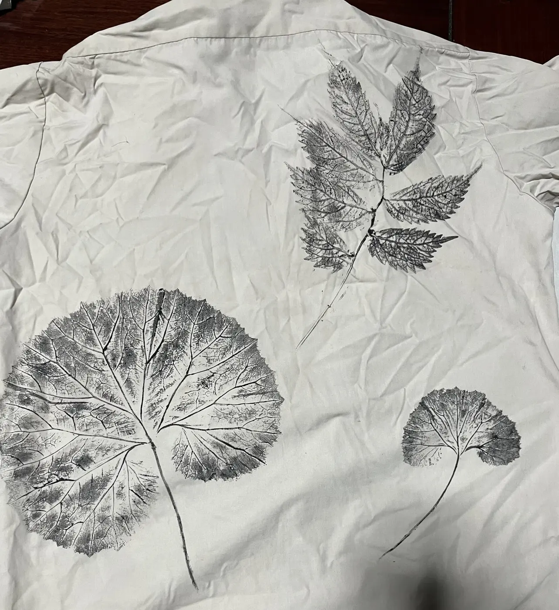
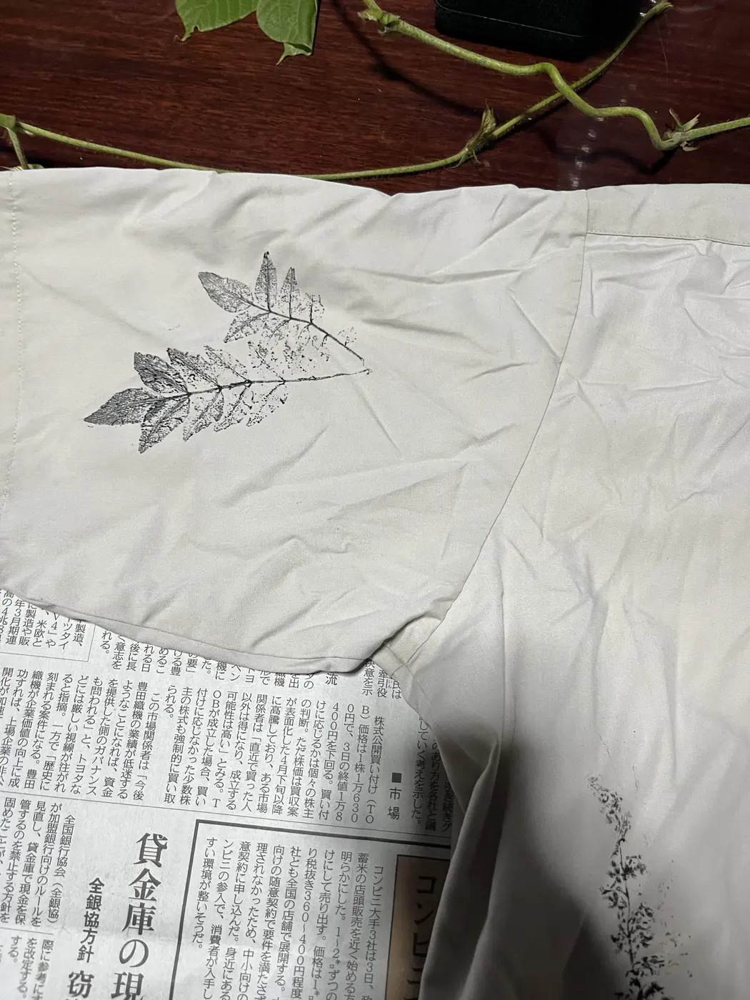

制服シャツ — カラムシ染＋草花拓
高校時代の制服シャツをカラムシで染め、その上へ採取した草花を写した一着です。染めの地色と植物の輪郭を一枚の布で重ねました。

- Year
- 2025年
- Place
- 小院瀬見
- Materials / Method
- 制服シャツ、カラムシ、植物
What I tried
前面には山椒、アレチギシギシ、クローバー、マンネングサ、セリなど、背面にはフキとミズを使いました。植物名を図鑑的に並べるのではなく、歩いて採った順序や大きさの差を衣服の表裏へ残しています。

